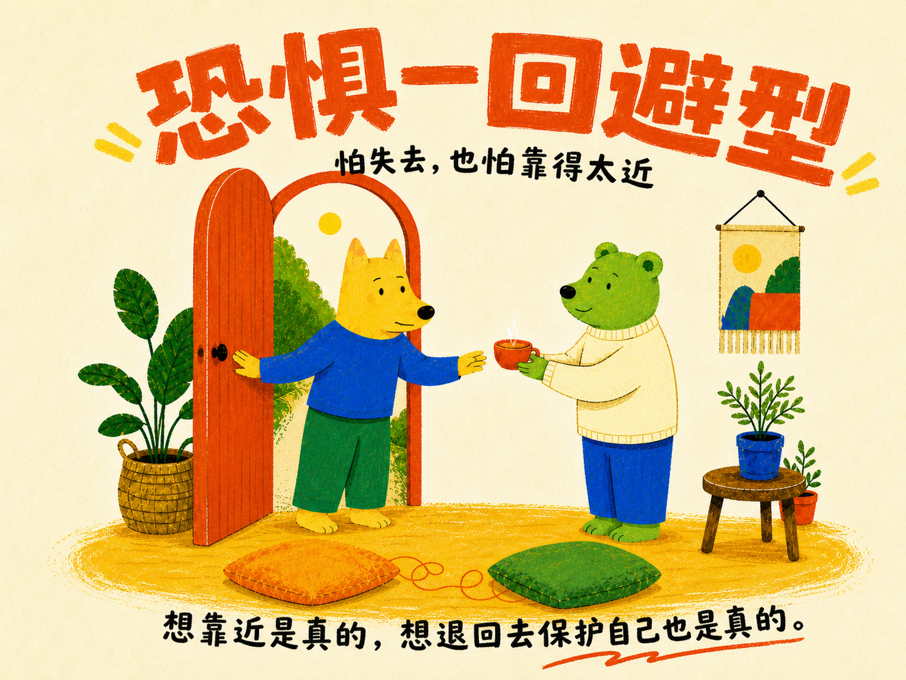
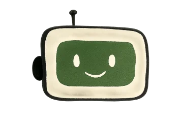

很想确认
回应变少时，你会迅速察觉，也更容易担心关系正在远离。
你的依恋类型是

你不是故意忽冷忽热。关系对你很重要，但真正靠近时，你也可能紧张：你想确认对方还在，又怕自己的需要暴露以后，更容易受伤。
回应变少时，你会迅速察觉，也更容易担心关系正在远离。
当需要暴露太多，你会先收回情绪，给自己留一点安全距离。
你能捕捉语气和距离的变化，只是有时会把不确定读成危险。
你真正想要的不是黏住，而是知道暂停以后，对方还会回来。
ATTACHMENT NOTES · FEARFUL–AVOIDANT
你并不是不需要关系。恰恰相反，你很在乎确认、稳定和被认真回应。你想知道：我表达了真实感受以后，关系不会因此变得更危险。
你可能一边盯着迟迟没来的回复，一边提醒自己别显得太需要。等对方真的靠近，你又担心暴露太多，于是先冷下来，说一句“没事”。
不安刚出现时，你会想追着确认；可如果回应仍不清楚，你又可能突然撤回、变得理性，甚至像是不在乎。外人看见的是反复，你经历的是两层保护同时启动。
别人可能以为你故意让人猜，或把你的退后理解成拒绝。其实你不是想制造距离，而是不确定自己的需要能不能被安全接住。
你需要的不是一句“别想太多”，而是清楚、稳定、可兑现的回应：现在发生了什么、我们什么时候再谈、这段连接是不是仍然在。
下一次不必一次解释整段关系。先把试探换成一个小请求：“刚才一直没有回应，我有点不安。你方便告诉我，今晚什么时候可以聊十分钟吗？”
 恋爱模式已完成
恋爱模式已完成 依恋模式恐惧—回避型
依恋模式恐惧—回避型 人格底色待解锁
人格底色待解锁 思考模式待解锁
思考模式待解锁 社交模式待解锁
社交模式待解锁
结果观察依恋焦虑与依恋回避两条连续维度，只用于自我理解；它不是临床诊断，也不替你判断一段关系。